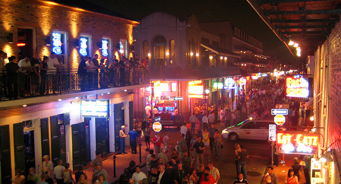

路易斯安那州位于墨西哥湾沿岸，以对比强烈的文化、地理景观著名。你既能感受嘉年华会的狂欢，也能体验荒野沼泽地中的寂静。这里混合了美国几乎所有的重要文化元素，如印地安、西班牙、法国、英国和非洲等文化。


如果要在美国感受南欧老城风情，就一定要到新奥尔良的法国区，这个四方形区域，由法式风格建筑群组成，以独特的度假、艺术、娱乐著称。这里是夜生活的天堂，由诸多酒吧组成的波旁街一直营业到凌晨四点。而以Cajun闻名的特色美食，也与美国本土餐饮有着明显的区别，受到众多游客的青睐。
1728年，12个乌尔苏拉会的修女来到新奥尔良，在法国驻军的“痛苦小医院”照料伤员，并教育殖民地的年轻女孩。这所在1745年-1752年由法国殖民军队修建的女修道院现在是密西西比河谷最古老的建筑，也是法国区唯一残存的法式建筑。自助游览可以参观各种旋转展品和美丽的圣玛丽教堂。
一个8英亩左右的区域，有81栋房子，主要为音乐家而建，是这座城市的文化和经济生活的重要组成部分。色彩明亮的房子使周围的社区也变得绚丽多姿。参观时请记住，这是一个实实在在的生活社区，如果未经主人允许就拍摄这里的居民或他们的住宅，甚至不下车就拍摄，对当地居民是很大的冒犯。
从《夜访吸血鬼》、《热夜之梦》到《始祖家族》，一系列的吸血鬼故事都与新奥尔良这块土地结下了不解之缘。美国著名恐怖小说作家安妮•赖斯也在《吸血鬼编年史》、《巫术时刻》等多部作品中描绘了无数栩栩如生的吸血鬼和女巫，她曾坦言她的灵感正是来源于新奥尔良这个充满众多神秘传说的城市。对吸血鬼文化感兴趣的游客，可以参加一个名为“吸血鬼之旅”的行程，在圣路易斯教堂前集合，导游会带着众人一路穿行，游经几座最负盛名的“鬼屋”。导游还会配合肢体语言，绘声绘色地为游客们演绎发生在这里的灵异传说。
新奥尔良的国家二战博物馆的原名是诺曼底登陆博物馆(The National D-Day Museum)，由Stephen Ambrose于2000年6月建立。这里向参观者阐释了二战时期与美国有关的各种故事，包括：为什么美国要参与二战、美国又是如何成为二战的大赢家，二战对现在的美国有何影响等等。Louisiana Memorial Pavilion展示了诺曼底登陆时的装备物件；The Solomon Victory 放映厅向参观者放映35分钟的4D电影《超越一切疆界Beyond All Boundaries》，好莱坞明星汤姆•汉克斯是这部影片的制片人和讲解人。参观完国家二战博物馆，你会对“自由的价值”有新的认知。

联盟国纪念堂路易斯安那内战博物馆位于新奥尔良市，建于1891年，它是路易斯安那州历史最悠久的持续开放的博物馆。这里包含美利坚联盟国与美国内战相关的历史文物，是全世界第二大有关联盟国内战主题的博物馆，仅次于里士满的联盟国博物馆。这座博物馆的建筑类似教堂，拥有华丽的花窗玻璃，被称为“南方战争修道院”。
当代艺术中心（简称：CAC）的展览面积为10,000平方英尺，相当于929平方米，于1976年正式对外开放。艺术气息浓厚的展览，别开生面的现场表扬吸引着大量游客前来这里感受艺术的魅力。作为文化的先驱，许多艺术家会通过这个平台举办五花八门的展览：画展、摄影展、行为艺术、歌舞剧、雕塑展等各项表演，让参观者感受艺术的震撼。作为艺术文化的宣传者，当代艺术中心每年都会聚集1万多名艺术爱好者，让他们能够亲眼目睹艺术家创作的全过程，与艺术家们互动，领略艺术作品诞生的艰辛。
欧登南方艺术博物馆是纽奥良大学附设的博物馆，由商人欧登于2003年建造，是个比较年轻的博物馆，旨在向大众展示美国南方艺术文化。馆内收藏品极为丰富，主要收藏美国南方自1733年到现在的艺术绘画、水彩画作、版画、摄影作品、雕像及工艺品等作品，许多展览品都是来自商人或收藏家的大方捐献，才让人们都机会更深入地了解美国南方文化。
位于法国区的典藏厅是新奥尔良爵士爱好者的乐园。典藏厅建于1750年，起初只是一处私人住所。1961年改建后开始向大众开放，厅内收藏了新奥尔良爵士乐的各种物品，还挂有新奥尔良地区爵士乐创始者的画像。由于爵士乐的发展大不如前，已经不像现代爵士与摇滚乐那么流行了。典藏厅的创始人Allan与Sandra Jaffe不希望新奥尔良爵士就这么消失，期望它能够一代接一代地发展下去，所以才将这里改建成新奥尔良爵士爱好者的聚集地，有酒馆、客栈、摄影室和艺术展览馆。每天晚上8点15分开始，会有70、80年代的新奥尔良爵士音乐人的做现场表演，年轻音乐家则在一旁学习。如此这般音乐交流的夜晚显得十分和谐与美好。